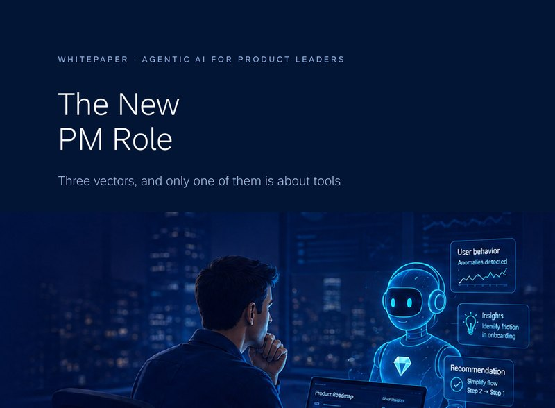
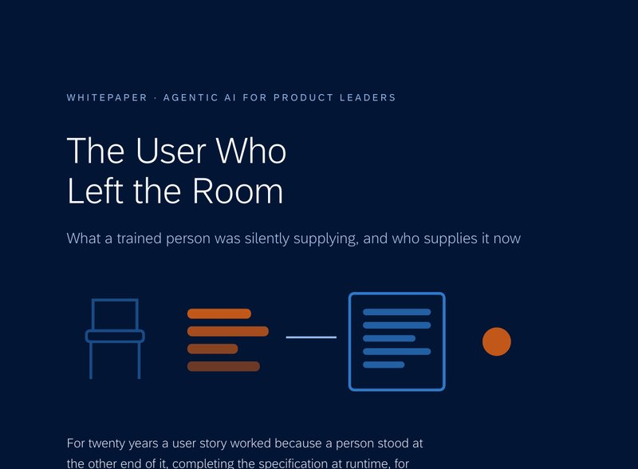
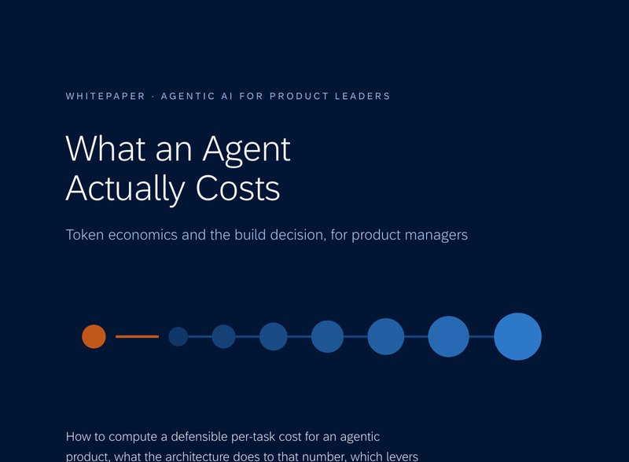
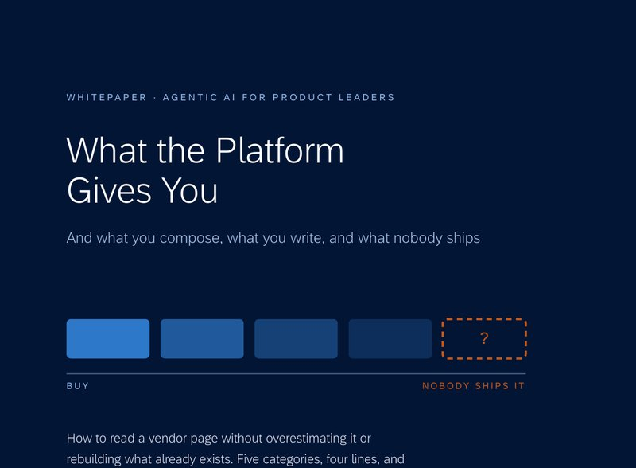
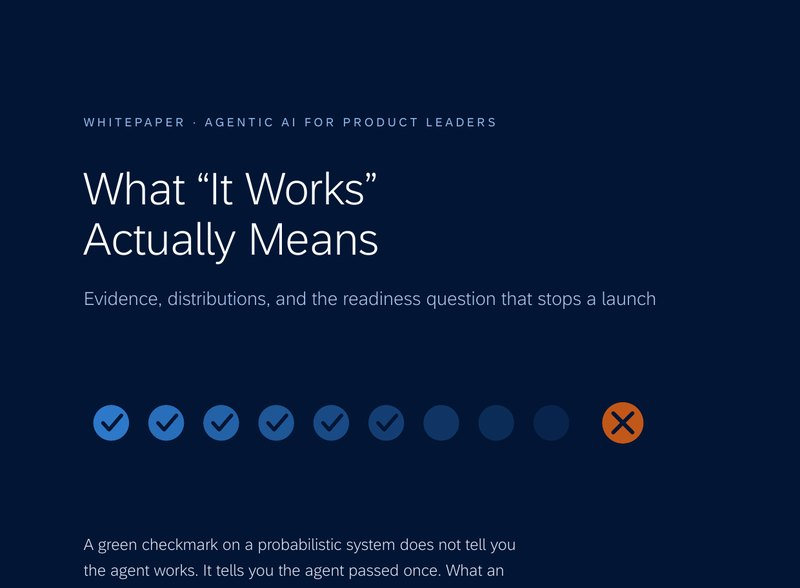
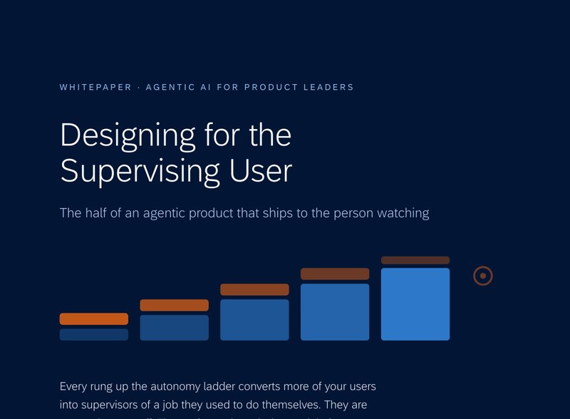

Whitepapers · Agentic AI for Product Leaders
Eight papers, one question each
Short, self-contained, and drawn from the four books.
Each of these answers a single question a product manager actually gets asked, in eight to fifteen pages. They are drawn from the series but written to stand alone, so you can hand one to a room that has not read any of the books.
They are ordered here the way I would read them, not alphabetically. Start anywhere. Every one is free to read on this page and free to download.

What is my job now?
Three vectors define the job now. Efficiency arrives for everyone on the same day, so it is the new floor. The other two, judgment and collaboration, cannot be bought or installed.

What did the person know that nobody wrote down?
For twenty years a user story worked because a trained person stood at the other end, completing the specification at runtime for free. Take them out and it has to be written down.

What do I prototype when there is no UI?
PMs are told to prototype, and at high autonomy there is almost no interface left. The object of the prototype moved, from the screen to the judgment. The disagreements are the specification.

Should we build it?
The number that decides your product is not the model's price. It is how often your architecture re-enters the model. How to compute a defensible per-task cost and compare it to the alternative.

What do we buy?
What the platform ships, what your team composes, what you write as policy, and what nobody shipped as of mid-2026. How to read a vendor page without overestimating or rebuilding it.

How do we know it works?
A green checkmark on a probabilistic system does not mean the agent works. It means it passed once. The four places the testing instinct breaks, and what a launch review should refuse to accept.

Who watches it?
Climb the autonomy ladder and your user becomes the supervisor of a job they used to do themselves. Nobody staffed that role. What you actually build for the person now watching.
Why did the deployment fail when the model worked?
Most agentic projects fail on arrival, not on capability. You onboarded a contractor with no statement of work and no termination clause, into a team that never interviewed it.
All eight are free. No email, no form. If one is useful, the four books behind them are free to read online as well.